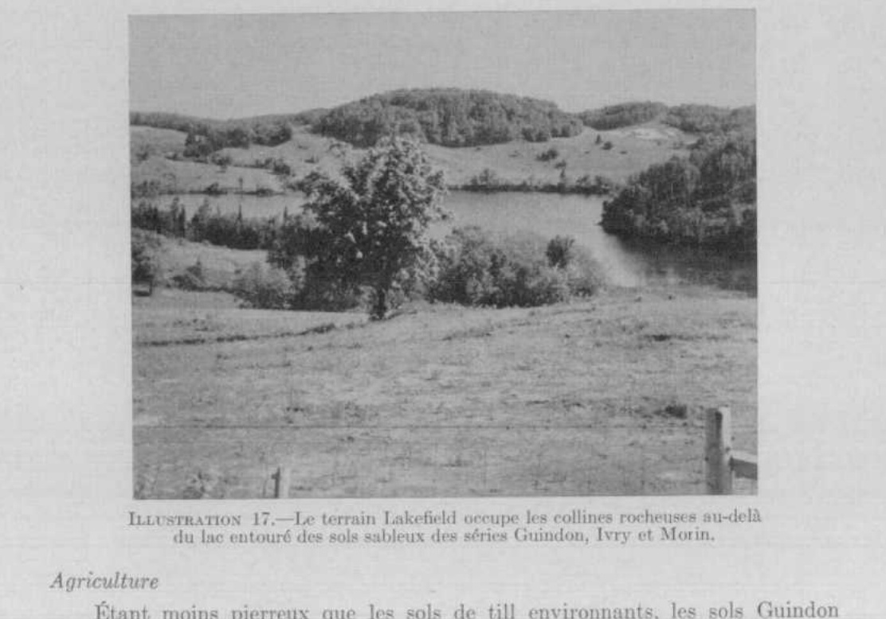
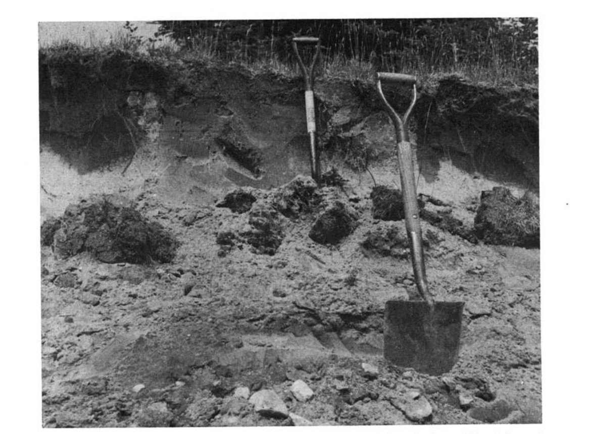

Identification & Caractéristiques Générales
La série Guindon s'est développée dans des dépôts meubles constitués d'une couverture de sédiments sableux d'une épaisseur variant de 60 à 180 centimètres, reposant en discontinuité lithologique sur un till glaciaire basal ou directement sur le roc cristallin des hautes terres des collines des Laurentides. Ces formations géomorphologiques occupent des positions topographiques de pentes douces à modérées ou de terrains légèrement vallonnés, s'étageant généralement à des altitudes comprises entre 150 et 450 mètres. La surimposition de ce manteau sableux a partiellement atténué le micro-relief glaciaire initial, bien que la pierrosité résiduelle demeure caractérisée par l'émergence sporadique de blocs erratiques et d'affleurements rocheux proéminents issus du substrat sous-jacent.
Le profil morphologique présente des textures dominantes de sable loameux ou de loam sableux, affichant une réaction fortement acide et une très haute perméabilité dans le solum. Le drainage naturel est globalement bon, voire excessif sur les sommets et les secteurs à dépôts profonds, mais peut être modéré sur les bas de pente en raison des apports d'eau hypodermique. Le mouvement vertical des eaux d'infiltration est freiné par la présence sous-jacente du till ou du roc, ce qui induit l'apparition de caractères hydromorphes, tels que des tachetures de gley, dans la partie inférieure du profil ou le long des axes de drainage. La capacité de rétention en eau et la fertilité chimique naturelle sont faibles, le profil étant soumis à une forte lixiviation des bases échangeables.
Sur le plan agronomique, les aptitudes des sols Guindon sont restreintes par les limitations combinées de la pierrosité locale, de la topographie en pente favorisant l'érosion hydrique linéaire sous culture, et de la faible réserve utile en eau. La mise en valeur agricole nécessite une régie rigoureuse incluant des apports réguliers d'amendements calciques pour corriger l'acidité, une fertilisation minérale soutenue pour pallier la carence en éléments nutritifs, ainsi que des pratiques de conservation des sols pour limiter le ruissellement. Une proportion importante de ces superficies demeure confinée aux cultures fourragères extensives, aux pâturages permanents ou au couvert forestier, les grandes cultures et les productions maraîchères n'y obtenant que des rendements limités.
Classification Taxonomique & Environnement Pédologique
| Ordre Pédologique | Podzolique |
|---|---|
| Grand Groupe (SCSS) | Podzol humo-ferrique |
| Sous-Groupe Taxonomique | Podzol humo-ferrique orthique |
| Famille Pédologique | Sableuse, mixte sableux, acide |
| Mode de Dépôt Parental | Fluviatile sur morainique |
| Classe de Drainage Naturel | Bien drainé |
| Régime Thermique & Humidité | Frais / Subhumide |
Description Morphologique du Profil Type
Séquences génétiques des horizons pédologiques caractérisant le profil type représentatif de la série Guindon :
Profil cultivé (agricole) — Comté de Argenteuil
✓ Source : Comté de Argenteuil — Page 102Couleur Munsell : Non précisée
Structure & Consistance : Fine granuleuse très friable et monogranulaire
Description morphologique : Terre franche sableuse légère, brune, contenant surtout du sable fin mais un peu de sable moyen et grossier, très peu de gravier; structure fine granuleuse très friable et monogranulaire; pH 5.2-5.6.
Couleur Munsell : Non précisée
Structure & Consistance : Polyédrique à granulaire
Description morphologique : Restes d'une couche délavée gris clair. Dans les sols vierges, l'épaisseur de cette couche varie de 1 à 3 pouces.
Profil représentatif — Comté de Argenteuil
✓ Source : Comté de Argenteuil — Page 103Couleur Munsell : Non précisée
Structure & Consistance : Polyédrique à granulaire
Description morphologique : Terre franche sableuse légère brun rougeâtre; dans les champs cultivés, cet horizon est partiellement ou complètement mélangé à la couche arable.
Couleur Munsell : Non précisée
Structure & Consistance : Polyédrique à granulaire
Description morphologique : Sable limoneux moyen à fin, brun clair à brun jaunâtre clair; gréseux, sans structure; modérément lâche; pH 5,4-5,8.
Couleur Munsell : Non précisée
Structure & Consistance : Fine
Description morphologique : Terre franche sableuse légère à sable limoneux moyen à fin brun jaunâtre devenant jaune pâle dans la partie inférieure de l'horizon; structure fine; modérément lâche à légèrement ferme; pH 5,4-5,8.
Couleur Munsell : Non précisée
Structure & Consistance : Polyédrique à granulaire
Description morphologique : Terre franche sableuse légère, sable limoneux ou sable, gris brunâtre clair, les particules de sable variant en grosseur de moyennes à fines; légèrement ferme; pH 5,5-5,8.
Couleur Munsell : Non précisée
Structure & Consistance : Polyédrique à granulaire
Description morphologique : Assise rocheuse ou till sablo-pierreux.
Profil cultivé (agricole) — Comté de Gatineau
✓ Source : Comté de Gatineau — Page 60Couleur Munsell : 10YR 2/1
Structure & Consistance : Polyédrique à granulaire
Description morphologique : Matière organique noire (10YR 2/1), humus du type brut; très absorbant et très perméable; pH 3.8 à 4.2.
Couleur Munsell : 7.5YR 6/2
Structure & Consistance : Polyédrique à granulaire
Description morphologique : Sable loameux, éluvié, gris rosâtre (7.5YR 6/2); pH 3.8 à 4.2.
Couleur Munsell : 5YR 4/6
Structure & Consistance : Monogranulaire
Description morphologique : Sable rouge jaunâtre (5YR 4/6-5/6); structure monogranulaire; très perméable; pH 4.8 à 5.2.
Couleur Munsell : 7.5YR 5/6 (matrice), 10YR 5/4 (marbrures)
Structure & Consistance : Polyédrique à granulaire
Description morphologique : Sable loameux ou sable brun vif à brun jaunâtre (7.5YR 5/6, 10YR 5/4-5/6), avec faibles marbrures.
Couleur Munsell : Non précisée
Structure & Consistance : Polyédrique à granulaire
Description morphologique : Till rocheux, gris brunâtre pâle.
Profil naturel (vierge) — Comté de Hull
✓ Source : Comté de Hull — Page 68Couleur Munsell : 10YR 2/1
Structure & Consistance : Polyédrique à granulaire
Description morphologique : Matière organique noire (10YR 2/1), humus du type brut; très absorbant et très perméable; pH 3.8 à 4.2.
Couleur Munsell : 7.5YR 6/2
Structure & Consistance : Polyédrique à granulaire
Description morphologique : Sable loameux, éluivé, gris rosâtre (7.5YR 6/2); pH 3.8 à 4.2.
Couleur Munsell : 5YR 4/6
Structure & Consistance : Monogranulaire
Description morphologique : Sable rouge jaunâtre (5YR 4/6 – 5/6); structure monogranulaire; très perméable; pH 4.8 à 5.2.
Couleur Munsell : 7.5YR 5/6 (matrice), 10YR 5/4 (marbrures)
Structure & Consistance : Polyédrique à granulaire
Description morphologique : Sable loameux ou sable brun vif à brun jaunâtre (7.5YR 5/6, 10YR 5/4 – 5/6), avec faibles marbrures.
Couleur Munsell : Non précisée
Structure & Consistance : Polyédrique à granulaire
Description morphologique : Till rocheux, gris brunâtre pâle.
Profil forestier / boisé — Comté de L'assomption
✓ Source : Comté de L'assomption — Page 59Couleur Munsell : 10YR 2/1
Structure & Consistance : Polyédrique à granulaire
Description morphologique : Humus brut, noir (10YR 2/1); très perméable et pouvant absorber beaucoup d'humidité; pH 3.8 à 4.2.
Couleur Munsell : 7.5YR 6/2
Structure & Consistance : Monogranulaire
Description morphologique : Sable loameux, gris rosâtre (7.5YR 6/2); très perméable; structure monogranulaire; pH 4.0 à 4.4.
Couleur Munsell : 5YR 4/6
Structure & Consistance : Mono-granulaire
Description morphologique : Sable à sable loameux rouge jaunâtre (5YR 4/6-5/6); structure mono-granulaire; très perméable et très aéré; pH 4.8 à 5.2.
Couleur Munsell : 7.5YR 5/6 (matrice), 10YR 5/4 (marbrures)
Structure & Consistance : Polyédrique à granulaire
Description morphologique : Sable loameux à sable brun vif ou brun jaunâtre (7.5YR 5/6-10YR 5/4-5/6); légères mouchetures de gley; très perméable; pH 5.0 à 5.6.
Couleur Munsell : Non précisée
Structure & Consistance : Polyédrique à granulaire
Description morphologique : Till glaciaire pierreux, gris brunâtre pâle, de texture sablo-loameuse; très dense; modérément perméable; pH 5.2 à 5.6.
Profils Photographiques & Planches de Terrain
Documents iconographiques, figures pédologiques et coupes de terrain documentées dans les mémoires d'inventaire pour de la série Guindon :



Propriétés Physico-Chimiques & Analyses de Laboratoire
Données Analytiques de Laboratoire
Aucune analyse physico-chimique quantitative de laboratoire (granulométrie par sédimentométrie, pH H₂O/CaCl₂, matière organique Walkley-Black ou bases échangeables) n'a été consignée pour cette unité dans les archives historiques numérisées ou les bases contemporaines EESSAQ/MAPAQ.
Particularités Régionales, Phases & Variantes Pédologiques
Déclinaisons régionales, faciès texturaux, phases d'érosion ou de pierrosité et variantes cartographiées par étude pour de la série Guindon :
| Étude Régionale | Symbole | Appellation / Phase / Variante | Différenciation avec la série type (Analyse pédologique) |
|---|---|---|---|
| Comté de Argenteuil | Gu |
Guindon loam sableux à sable limoneux | Modalité modale de référence (type de base de la série). |
| Comté de Gatineau | Gu |
Guindon sable loameux à loam sableux | Conforme à la série type de référence (caractéristiques texturales et drainage identiques). |
| Comté de Hull | Gu |
Guindon sable à sable loameux | Faciès sableux très filtrant et pauvre en éléments nutritifs vis-à-vis du loam sableux de référence. |
Guf |
Guindon loam sableux | Conforme à la série type de référence (caractéristiques texturales et drainage identiques). | |
| Comté de L'assomption | Gu |
Guindon sable loameux | Faciès sableux très filtrant et pauvre en éléments nutritifs vis-à-vis du loam sableux de référence. |
Guf |
Guindon loam sableux | Conforme à la série type de référence (caractéristiques texturales et drainage identiques). |
Distribution Pédo-Paysagère & Représentativité Cartographique (Couverture PPS 2026)
- Sainte-Agathe loam sableux fin (SNG) — co-occurrente dans 65 polygone(s)
- Ivry sable fin à loam sableux (IVR) — co-occurrente dans 33 polygone(s)
- Gatineau loam sableux (GTU) — co-occurrente dans 33 polygone(s)
Aptitudes Agronomiques, Hydropédologie & Conservation des Sols
Indicateurs Hydropédologiques & Vulnérabilité à l'Érosion (BDHP 2026)
Interprétation BDHP : Potentiel de ruissellement faible. Sols à infiltration rapide (sables profonds, graviers bien drainés).
Classement selon l'Inventaire des Terres du Canada (ITC / CLI) : Classe 3m.
- Potentiel agricole : Terroir adapté aux cultures régionales selon la texture dominante et la régie de drainage.
- Contraintes majeures : Bien drainé. Risque d'engorgement temporaire ou d'excès d'eau printanier.
- Gestion & Aménagement : Drainage souterrain ou superficiel préconisé sur les terres planes. Chaulage et apport organique régulier selon les bilans agronomiques.
- Cultures adaptées : Grandes cultures (maïs, soya, céréales), prairies fourragères et cultures maraîchères selon le contexte géomorphologique.